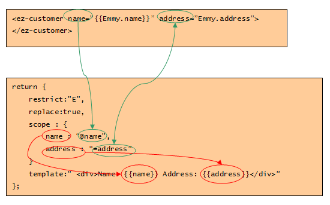

scope：使用隔离的作用域
注意：通过设置scope属性，指令的每个实例都将获得一个隔离的本地作用域：
示例：
var ezCustomerDirectiveFactory = function(){
return {
restrict: "E",
replace: true,
scope: {
name: "@name",
address: "@adderss"
},
template: "Name: {{name}} Address: {{address}}
"
}
}
在上面的例子中，我们在本地scope上定义了两个属性：name和address，这样在 模板中就可以使用name和address了。
注意不同域中对象的替换：name属性的值之前有一个@符号，这是一个约定好的标记，
它 告诉编译器，本地scope上的name值需要从应用这个指令的DOM元素的name属性值 读取，
如果DOM元素的name属性值变了，那么本地scope上的name值也会变化。
注意切换不同域中的凭证：address属性之前的=符号也是一个约定好的标记，
它告诉编译器，本地scope 上的address属性值和DOM元素的address属性值指定的外部scope对象上的模型需要 建立双向连接：
外部scope上模型的变化会改变本地scope上的address属性，本地 scope上address属性的变化也会改变外部scope上模型的变化。
上面两个注意的示例图: 
有图可得：
1.指令的template绑定的是本地scope上的name和address。
2.本地scope的name属性的值始终是ez-customer对象上name属性的值。
3.本地scope的address属性值始终和ez-customer对应的scope对象上的Emmy.address 保持同步。